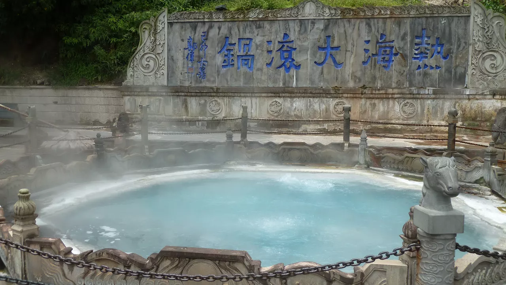
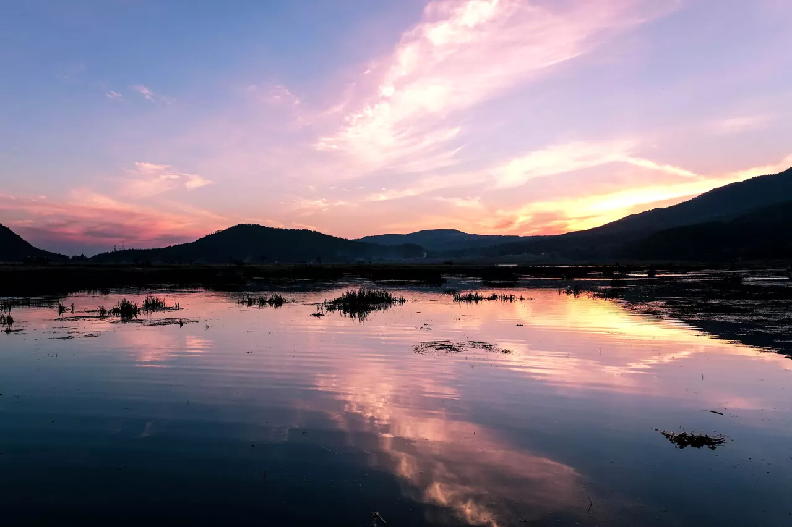
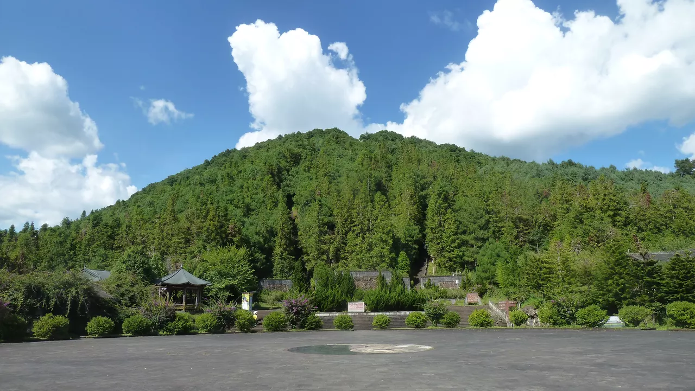
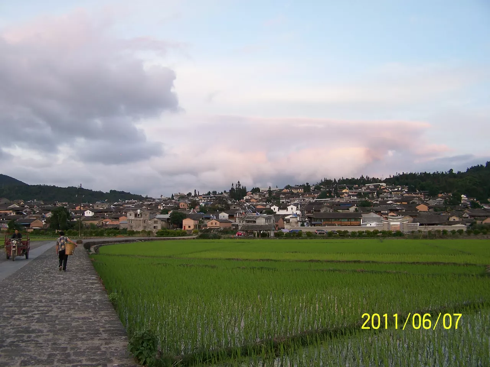

Rehai Scenic Area
Rehai is Tengchong's signature geothermal area, known for boiling springs, steam vents, and hot spring pools. It is ideal for a half-day visit combining sightseeing and hot spring relaxation.

Tengchong blends volcanic landscapes, geothermal wonders, and old-town culture. The following highlights are convenient for conference attendees and accompanying guests.

Rehai is Tengchong's signature geothermal area, known for boiling springs, steam vents, and hot spring pools. It is ideal for a half-day visit combining sightseeing and hot spring relaxation.

A rare highland wetland with floating meadows and seasonal birdlife, about 12.5 km from downtown Tengchong. Sunrise and sunset are the best times for photography and quiet walks.

This geopark features crater landscapes, volcanic cones, and lava landforms, preserving a long and complete record of regional volcanic activity. It is a top choice for geology, hiking, and panoramic views.

Located about 4 km west of the city center, Heshun is known for traditional residences, stone lanes, and strong overseas-Chinese heritage. It offers a calm cultural experience and is one of Tengchong's best-preserved historic towns.
Photo sources: Wikimedia Commons.